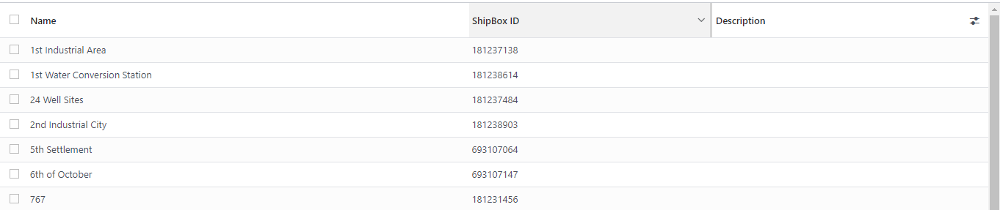

Transcrate Integration with ODOO V-16
(Enterprise)
Configuration:
After installation, a new menu is created in the Inventory
module.
Click to open and create the instance for configuration and
connection.
Provide the following details: username and password (login
credentials for Transcrate).
Click the "Check Connection" button, and you will receive a
"Successfully connected to Shipox Instance" message.
After successfully connecting, click the "Get Master Data" button.
This will create data in Odoo, including city, country, neighbourhoods, and service types data
Cities data created in Odoo.
Countries data created in Odoo.
Neighbourhood data created in Odoo.

Service type data created in Odoo.
Now open the Company form from settings and select the data in the
following fields.
Now there are three options to post data from Odoo to
Transcrate.
Manually:When
a delivery order is created, you will see a "Post Data" button. Upon clicking on that button, the system
will post the data into the Transcrate portal.
Instant Post:When
a delivery order is created, the system automatically posts the data into the Transcrate portal.
Auto Schedule:An
automatic scheduler is available, which posts the data according to your scheduler configuration. There are
3 auto schedulers created in Odoo to automate the process.
The cities and countries names in Odoo and Transcrate must be
identical in any case; otherwise, the order will not be created in the Transcrate portal. A new tab is
created on the Odoo customer form to streamline the process.
On the customer profile form, a Shipox tab is also created to map
the city and country names to match the Transcrate postal. These fields are left blank if city or country
are not mapped with Odoo and the system will not post the data to the Transcrate portal.
When the delivery details are posted to Transcrate, a Shipox order
number is fetched in Odoo delivery to track the records. Once Transcrate delivers the order and changes the
status to "Delivered," an automatic scheduler will run and update the status in Odoo accordingly.
Order detailed on Transcrate portal
Thank You!